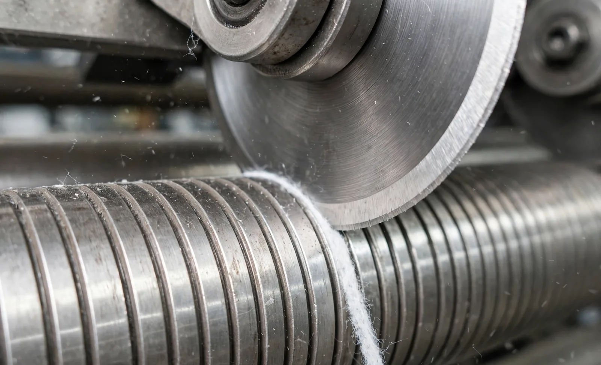

Published November 22, 2026 | By HDPTH Technical Editorial Team
Every converting plant has one material it quietly dreads, and for many hygiene, medical and wipes producers that material is the lightest one in the portfolio. A 15 to 20 GSM spunbond topsheet, a thin airlaid layer, a 25 GSM spunlace for premium wipes: all of them slit beautifully on the supplier’s demo roll and then produce fuzz, angled cuts and outright tear-out on your floor. The difference is almost never operator error. It is a specification gap — a machine configured around the average product, sold on the thickest one.
This guide is written for buyers and process engineers who are about to spend serious money on a slitter rewinder and whose product mix includes webs below roughly 30 GSM. It gives you the vocabulary to name the defects precisely, the physics behind each one, and the contract language that moves the risk back to the supplier where it belongs.
Why low-GSM nonwovens punish a poorly specified slitter
A nonwoven is a fibre network, not a continuous solid. Its strength comes from entanglement, thermal bonds and chemical bonds between fibres — and at low basis weight there simply are not many fibres per unit width to carry load. Where a 60 GSM laminate might tolerate several newtons per centimetre of web tension, a 15 GSM spunbond can begin to stretch and neck permanently at a small fraction of that. The web gets narrower between tension zones, the fibre network elongates around every roller contact, and the material that finally arrives at the knife is weaker than the material that left the unwind.
The cut itself concentrates the problem. A slitting blade does not separate fibres cleanly unless it is presented with the right combination of sharpness, angle, penetration and support. On a thick web, a slightly dull blade still leaves an acceptable edge because the surrounding material is strong enough to shear. On a low-GSM web the same blade pulls individual fibres out of the bond network instead of severing them — the visible result is fuzz at best, and tear-out where a bonded patch separates entirely from the web.
Speed compounds everything. The faster the web travels, the shorter the time the knife edge has to sever each fibre, and the more the fibre ends deflect before they are cut. This is why a line that produces beautiful 40 GSM rolls at 300 m/min can look completely different at the same speed on 18 GSM: the physics of the cut scale with speed, and the knife section that was adequate at moderate speed becomes the bottleneck.
The defect vocabulary: name the failure before you buy
B2B buyers lose leverage when they describe every edge problem as “bad cutting”. Suppliers respond to named defects because each one has a different root cause and a different machine fix. Four terms cover most of what you will see on low-GSM webs.
Tear-out is the catastrophic case: a chunk of the web separates along the slit edge, leaving a ragged notch or a complete web break. It happens when the web is under-tensioned and waves into the knife, when the blade catches a bonded spot, or when the anvil support is wrong. On a hygiene line it means a stopped machine and a scrapped parent roll.
Fuzz and lint are the chronic case: loose fibre ends standing proud of the slit edge. Fuzz is generated by blades that pluck rather than sever, and it grows as the blade wears. It matters commercially, not just cosmetically: lint contaminates downstream processes, shows up in wipe product counts, and can fall out of specification for medical packaging.
Fused or beaded edges appear when the cutting interface generates heat — typically a razor spinning with the web or running against a hard anvil at high speed. On thermoplastic spunbonds the melt leaves a hard bead that later cracks and sheds particles; on some products the bead also changes how the edge seals or folds downstream.
Angled or drifted cuts are the quiet cost: edges that are geometrically imperfect even when they look clean. On narrow widths the lost material is pure margin, and on printed or registered products the drift breaks width tolerance. Drift usually traces back to knife positioning accuracy and web alignment, not blade condition.
Choosing the cutting method for thin, fibrous webs
The three classical slitting methods behave very differently on low-GSM nonwovens, and the right answer depends on your fibre type and end product. If you need a refresher on the fundamentals, our comparison of razor, shear and score cutting methods covers the general trade-offs; this section adds the low-GSM specifics.
Shear cutting — a ground blade closing against a matched anvil — is the default recommendation for thin nonwovens. It severs the fibre network between two edges, which is exactly what a fragile web needs, and it produces the least dust when the blade geometry and clearance are correct. The costs are setup precision and blade cost: shear systems need accurate overlap and side pressure adjustment, ideally with automatic knife positioning, and the blades themselves are more expensive than razor blades.
Razor cutting is cheap, fast to set and works on very open, air-permeable structures where the fibres are widely spaced. Its weaknesses on low-GSM webs are fuzz (the blade edge plucks fibres as it passes) and heat (a driven or contact-spinning razor can fuse thermoplastic fibres). Razor remains legitimate for coarse spunbond at moderate speeds; it becomes a defect generator on dense spunlace and on any product with a lint specification.
Score cutting presses the web against a stationary or rotating anvil and relies on crush. On thin fibrous webs it is usually the worst option: crushing a fibre network produces lint by definition and weakens the edge permanently. Reserve it for products where edge appearance is irrelevant.
Ultrasonic slitting deserves separate attention because it is the definitive answer to fuzz on the most demanding low-GSM products. The horn’s vibration severs and simultaneously consolidates the edge, so a 25 GSM spunlace for premium wipes or medical use emerges with a smooth, sealed edge and essentially no lint. It costs more per lane and has width limitations, so it is typically specified selectively — on the lanes that serve the most quality-sensitive products — rather than across the whole knife shaft. For a deeper treatment, see our guide to ultrasonic slitting for nonwovens.
Tension and nip control: the invisible half of tear-out
Buyers interrogate knife options and then sign off tension specs written for thicker products. That is a mistake. On low-GSM webs the tension system does as much to determine edge quality as the knives themselves.
The rule is control, not force. A delicate web needs the minimum tension that keeps it flat and track-stable, applied consistently from unwind to rewind. That means closed-loop control with load cells or a high-quality dancer, drives with a wide turndown range, and taper-tension profiles on the rewind so the growing roll does not crush its own inner layers. Open-loop or poorly calibrated tension control shows up as necking and baggy lanes, and a baggy lane wandering into a knife is a classic tear-out trigger.
Nip points deserve equal scrutiny. Every lay-on roll, pull roll and driven nip that presses the web can imprint its edges before the knife ever touches them. On low-GSM webs the specification question is not just “is there a nip?” but “how much pressure, how repeatable, and can it be zeroed?” Air-loaded nips with fine pressure control, and the ability to run some positions as pure guide rollers, protect delicate edges upstream of the cut.
Finally, look at the unwind. A brake that cannot run smoothly at the very low torques a light web needs will introduce tension spikes with every roll revolution — invisible on film, destructive on 15 GSM spunbond. Ask the supplier to demonstrate minimum-tension stability, not just maximum-tension capacity.
Knife geometry, sharpness and clearance on fragile webs
Assuming shear cutting, three variables govern the edge you get, and all three should appear in your specification.
Blade sharpness and material. Low-GSM webs forgive nothing: a blade that is “good enough” on laminate is a fuzz generator on spunlace. Hardened, fine-ground edges — tool steel at minimum, tungsten carbide where life justifies it — hold their geometry longer. Track blade life in metres, not days, and remember that on delicate webs the symptom of a dull blade (fuzz) appears long before the blade looks worn to the eye.
Overlap and clearance. Shear blades need a defined overlap into the anvil groove and a defined side pressure; both are material-specific. Too little engagement tears the web, too much crushes it and wears the anvil. A machine worth buying makes these settings dial-in repeatable, and automatic knife positioning systems that recall recipes per product remove the operator-dependent setup that quietly varies from shift to shift.
Support and wrap. The web must be flat and supported through the cut zone. Check how the machine presents the web to the knives: a controlled wrap on a dedicated slitting roll, with minimal flutter and no upstream wrinkles, is what separates an engineered knife section from a knife shaft bolted into any convenient position.

Machine features that matter below 25 GSM
Beyond the knife section, several options change from “nice to have” to “reason for the purchase” when your portfolio includes very light webs.
Differential rewind shafts. When lanes are slit from a light web, small tension differences between lanes would over-tighten some finished rolls and leave others loose. Differential shafts let each lane slip independently against a controlled core pressure, which keeps every finished roll within hardness tolerance even when the parent roll has gauge variation.
Web cleaning and dust extraction. Slitting generates lint even when done well. On hygiene and medical products that lint must be removed from the finished rolls, not carried into the downstream process. Specified extraction at the knife section and cleaning on the rewind are inexpensive relative to the claims they prevent.
Spreader and alignment rolls. A bowed spreader roll ahead of the knife section removes wrinkles that would otherwise feed straight into the blades, and web guide sensors keep the edge pattern where the knives were set. Both are standard equipment that becomes non-negotiable on light webs.
Rapid, repeatable knife change. Light webs run high metres on many lanes, so blade changes are frequent. Quick-change holders, positioned blades and recipe recall turn a 40-minute stop into a 10-minute one — over a year, that availability difference can exceed the cost of the knife system itself.
What to write into the specification
- Cutting method per lane group, selected for the thinnest product in your range, with the blade type, material and approved sharpening policy stated.
- Closed-loop tension control with a stated minimum stable tension — in newtons per centimetre — demonstrated on your lightest web.
- Taper-tension rewind profile and differential shaft specification, with finished roll hardness tolerance defined.
- Knife overlap, side pressure and clearance as recipe-recalled settings, with automatic positioning where budget allows.
- Edge-quality criteria on your own material: fuzz and tear-out limits inspected at defined magnification, plus a dust measurement method.
- Slit-width tolerance held at production speed, not at setup speed.
- Blade change time as a measured quantity, and metres-per-blade-life demonstrated during the trial on your material.
- FAT protocol including a witnessed run on your actual GSM range, with the thinnest product running at contracted speed.
Slitting is one link in the chain: put this guide beside our buyer’s guide to slit edge quality and burr control, and see the knife systems that carry these settings in production on our automatic knife systems product page. Together they turn edge quality from a complaint into a contract clause.
Slitting a web below 25 GSM?
Send HDPTH your GSM range, lane pattern and speed targets. We will recommend the cutting method and tension architecture for your lightest product first — not your average one — and document the edge-quality test that proves it at FAT.
Submit Your Project InquiryFrequently asked questions
What GSM counts as low-GSM nonwoven for slitting purposes?
Below about 30 GSM the web behaves like a film-thin structure: it cannot carry much tension, it stretches permanently around knife contact points, and it tears rather than shears when the cut is wrong. Spunbond hygiene topsheets, airlaid wipes substrates and thin spunlace all sit in this range. Between 30 and 60 GSM the same rules still apply but the tolerance window is wider.
What is the best cutting method for slitting low-GSM nonwovens?
For most low-GSM nonwovens the first choice is a sharp shear cut (blade and anvil) with hardened, precision-ground edges. Razor cutting is acceptable on very open structures at modest speeds where edge fusion is not a concern; ultrasonic slitting earns its cost when fuzz and dust must be eliminated, typically on spunlace used for wipes and medical products. Score cutting is generally the weakest option on thin fibrous webs because it crushes rather than cuts.
How much web tension should be used when slitting thin nonwovens?
Low-GSM webs are typically run at a fraction of the tension used for films and papers — often only a few tenths of a newton per centimetre of width. What matters more than the number is control: closed-loop tension with load cells or a well-damped dancer, taper-tension profiles through the rewind, and nip points that do not press delicate edges flat before they reach the knife.
How often should blades be changed when slitting low-GSM nonwovens?
There is no universal interval, but on delicate webs the visible symptom of a dull blade is fuzz and tear-out long before the blade looks worn. Specify a knife-life acceptance test on your material, track metres cut per blade position, and prefer machines with automatic blade positioning or quick-change holders so the replacement interval is cheap to honour.
What acceptance criteria should I write into the purchase contract?
Define edge quality on your own material, not a supplier demo roll: a fuzz and tear-out limit inspected at magnification, slit-width tolerance held at production speed, dust and lint measurement against a defined method, and knife-change time. Require the FAT to run your actual GSM range, including the thinnest product, at contracted speed for a witnessed shift.
Sources
- AIMCAL: web handling and converting education resources, including tension control and slitting
- INDA: nonwoven industry technical resources on basis weight, testing and converting
- EDANA: nonwovens standards and test methods for fibre-based materials
- Converting Quarterly: articles on shear slitting, blade wear and edge quality
- TAPPI: web handling references for paper, film and nonwoven converting